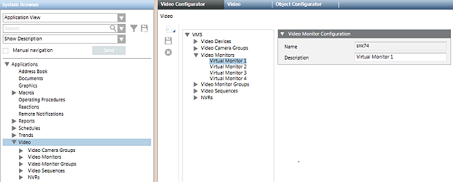
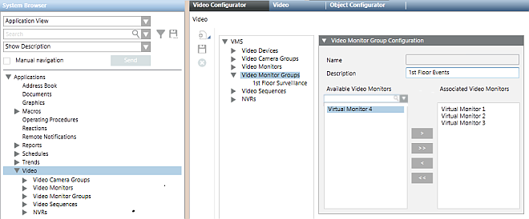
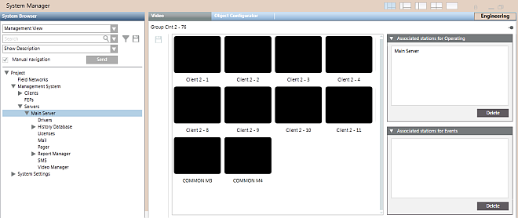

Configuring Monitor Groups
To be able to display video, a management station must have an assigned monitor group for operation, that will populate its video view. In addition, to be able to display video during alarm handling, a station must also have an assigned monitor group for events. The Desigo CC server station has two preconfigured monitor groups assigned to it by default. Any other stations need to be manually assigned a monitor group before they can display video.
For background information see Monitors and Monitor Groups Reference
Prerequisites
- Desigo CC is configured to support video surveillance. See Integrating Video Surveillance.
- System Manager is in Engineering mode.
- System Browser is in Application View.
NOTICE

Updating of objects in System Browser
The configurations described here are done in the Video Configurator tab:
- The changes will propagate to System Browser when the Video System is Connected. See Connecting the Video System.
- In case of video objects added, renamed or removed, a Sort command may also be needed, to correctly regroup objects in System Browser. See Grouping Video Objects.
Create Monitors for Video
The default video configuration includes 8 preconfigured monitors. Do this procedure if you need to create some additional monitors, to include in the monitor group of a station.
- In System Browser, select Applications > Video.
- In the Video Configurator tab, expand the Video Monitors folder of the VMS tree.
- Click New
 , and do one of the following:
, and do one of the following: - Select Add a New Monitor.Then in the Video Monitor Configuration expander, enter a Description for the monitor.
- Select Add Multiple Monitors. Then in the Multiple Monitor Configuration expander, enter the monitor Description prefix (it will be followed by a sequential number "_nnnn") and the number of monitors (up to 16).
NOTE: The following characters are not allowed in the Description text: “.” (dot), “:” (colon), “?” (question mark), “*” (asterisk). - Click Save
 .
.
- The new monitors are added to the Video Monitors folder of the VMS tree and under Applications > Video > Monitors in System Browser.

Create a New Monitor Group
The default video configuration includes 2 preconfigured monitor groups. Skip this section if you want to modify an existing monitor group.
- In System Browser, select Applications > Video.
- In the Video Configurator tab, expand the VMS > Video Monitor Groups folder.
- The monitor groups already configured in the system display in the VMS tree.

- In the Video Configurator tab, select VMS > Video Monitor Groups.
- Click New , and select Add a New Video Monitor Group.
- In the Video Monitor Group Configuration expander, enter a Description for the monitor group.
NOTE: The following characters are not allowed in the Description text: “.” (dot), “:” (colon), “?” (question mark), “*” (asterisk). - Click Save .
- The new monitor group is added to the Video Monitor Groups folder of the VMS tree and under Applications > Video > Monitor Groups in System Browser.
Select the Monitors to Include in a Group
- In System Browser, select Applications > Video.
- In the Video Configurator tab, expand the VMS > Video Monitor Groups folder.
- The monitor groups already configured in the system display in the VMS tree.
- In the Video Configurator tab, select VMS > Video Monitor Groups > [monitor group].
- The Video Monitor Group Configuration expander displays the list of available monitors on the left, and the monitors included in this group on the right.
- Use
 or
or  to add more monitors to this group.
to add more monitors to this group. - Use
 or
or  to remove monitors from this group.
to remove monitors from this group.
NOTE: You can include the same monitor in more than one monitor group—for example to obtain video views that share some images in common. Monitors will populate the video view from left to right and then from top to bottom. - For large lists, to help you find a particular monitor:
a. in the Search field, type a few characters of the description with wildcards (* for any string, or ? for exactly one character).
b. Click Search or press ENTER.
or press ENTER. - Only the monitors that match the search criteria are shown. Underneath each list, Items indicates
number of monitors shown/total number of monitors.
NOTE: Click x to clear the search. To repeat a previous search, select it from the drop-down list. - Use the Up and Down buttons to change the order of the monitors in the monitor group.
- Click Save .
- The changes propagate to the Monitor Groups folder of System Browser. The new arrangement will affect the video view of all stations that use this monitor group.
Assign a Monitor Group to a Station
The Desigo CC server station has two preconfigured monitor groups assigned to it by default. Any other stations need to be manually assigned a monitor group before they can display video.
- In System Browser, select Applications > Video > Monitor Groups > [monitor group].
- In the Monitor Control tab, Associated stations for Operating lists the stations that use this monitor group for their normal surveillance video view. Associated stations for Events lists the stations that use this monitor group for the video view that displays during alarm-handling.
NOTE: You can associate multiple stations to the same monitor group. If you do this, their video views will display the same set of images. However, each station can have only one operating monitor group and one events monitor group. - Select the Manual navigation check box and select the Management View.
- Select the station you want to associate to this monitor group from one of the following:
- Project > Management System > Clients > [client or web station]
- Project > Management System > Servers > Main Server
- Project > Management System > FEPs > [fep station]
NOTE: Identified web-based stations (Flex clients and Windows App clients) can be individually associated to monitor groups just like installed client stations. However, anonymous web-based stations, generically defined as Default web client, can only be collectively associated to the same pair of monitor groups. - Drag the station node into the Associated stations for Operating box (for video surveillance operations) and/or into the Associated stations for Events box (for alarm handling).
- Click Save .
- The station name is added to the Associated stations list.
NOTE: To remove an association, select the station name in the Associated stations lists and press the Delete button, located on the lower right. - Deselect the Manual navigation check box.
- The video view of the selected station will be populated with the monitors of the assigned group.

Connect Video Sources to a Monitor Group
Complete this procedure to set the video sources that display in each monitor of a group. These changes will affect the video views of any stations that are assigned that monitor group.
- In System Browser, select Applications > Video > Monitor Groups > [monitor group].
- The Video tab displays the video images of the selected monitor group.
- Use the toolbar to adjust the layout so that all the monitors are visible.
- In System Browser, select the Manual Navigation check box.
- Under Applications > Video > Cameras, select the camera you want to connect to a monitor.
- Images from the selected camera display in the first (top left) monitor. However, this connection is not persistent. The first monitor is reserved for displaying the currently selected video object, so its connected video source changes frequently.
- Drag-and-drop the camera onto one of the other monitors in the Video tab.
- The monitor is now connected to that camera, and will display its images in the video view.
NOTE: This change will affect all the video views that include this monitor. - Repeat steps 4 to 6 above to connect other monitors in the group to cameras.
NOTE: You can click X in a monitor to disconnect its camera.
- The configured video sources will populate the video view of any stations that are assigned this monitor group, see Checking the Stations Associated to a Monitor Group. They can also be accessed from any station by directly selecting the monitor group, see Display a Monitor or Monitor Group.
Delete a Monitor
NOTE: Deleting a monitor will affect all stations which include that monitor in their monitor groups.
- In System Browser, select Applications > Video.
- In the Video Configurator tab, select VMS > Video Monitors > [monitor].
- Click
 .
. - Click Yes to confirm.
- The monitor is removed from the VMS tree and from System Browser.
Delete a Monitor Group
Do these steps to remove a monitor group that is no longer required. This will not delete any of the monitors included in the group. However, it will affect any station that is associated to that monitor group.
- Before deleting a monitor group, check that it is not used by any station. See Checking the Stations Associated to a Monitor Group.
- In System Browser, select Applications > Video.
- In the Video Configurator tab, select VMS > Video Monitor Groups > [monitor group].
- Click .
- Click Yes to confirm.
- The monitor group node is removed from the Video Monitor Groups folder of the VMS tree, and from the Monitor Groups folder of System Browser.